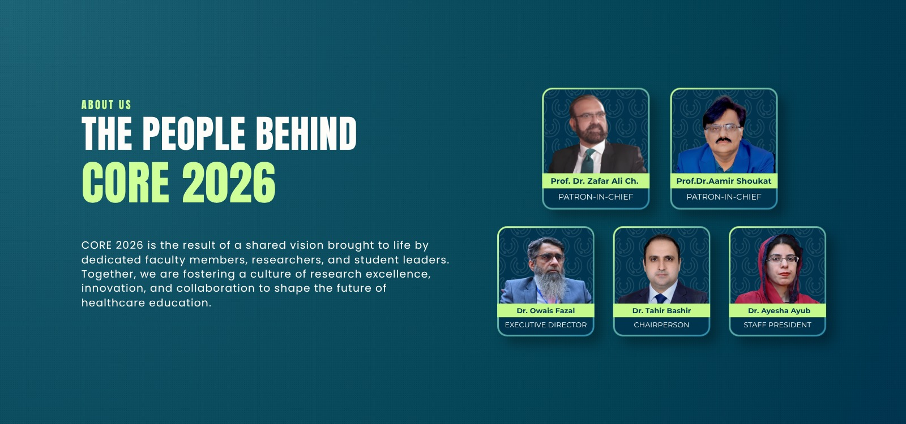
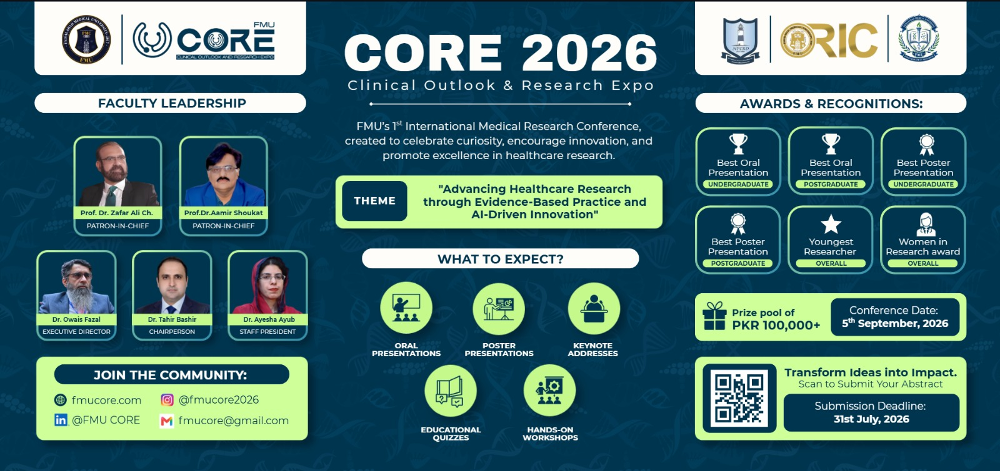

ABOUT US
FMU CORE is a student-and-faculty-led initiative at Faisalabad Medical University, built to give Pakistan's medical students a rigorous, supported path from research idea to national presentation. It's governed by a team of clinicians, academics, and students who designed the review process, the workshop curriculum, and the ambassador network from the ground up.
50
YEARS OF FMU HISTORY
The institution's first national-level research conference, after five decades without one.
2-LEVEL
REVIEW GOVERNANCE
Student committee for methodology, faculty committee for novelty, validity, and final acceptance.
INTERNATIONAL
REACH, NOT LOCAL
Built on an active Ambassador Programme and direct invitations to universities across Pakistan.
CORE 2026

